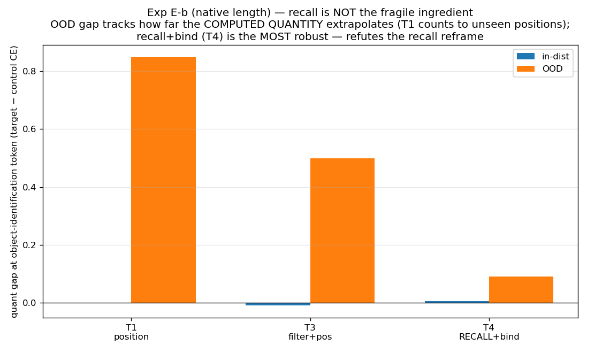

Thesis: Quantization is a brittle extrapolator — free (even regularizing)
in-distribution, and it damages an operation in proportion to how far the quantity it must compute
extrapolates beyond training. Skill-selectivity follows: bounded-output lookup skills are quant-free;
growing-output computation skills are fragile out-of-distribution.
Model: MiniQwen M (d=256, 6L, 4.32M params), VQ k=4 (2-bit), paired fp32-control vs VQ-target.
Single seed, CPU. Full numbers in runs/RESULTS.md, logs in runs/logs/.
F1 — damage is skill-selective (computation pays, retrieval is free)
E-a looked like recall-and-bind was fragile (OOD implicit +0.53 vs explicit −0.17)…

…but the length-controlled E-b refuted it: recall+bind (T4) is the MOST robust. Gap tracks how far the computed quantity extrapolates, not recall. F5 retracted.
H1 — clustering-quantization as an interpretability tool (validated)
H1 — bit-width elasticity map: crushing a component to 1-bit hurts computation more than lookup (35/42 above the line), and recovers the value/output localization from scratch. corr(elasticity, magnitude) = −0.15 (not a magnitude artifact).H2 — validated against a non-quantization ground truth: gradient saliency on the fp32 model agrees (Spearman ρ=0.55; 42/42 directional). Elasticity is correlated with, but not reducible to, gradient importance — it captures discrete-tolerance the gradients miss.
Training curves (reference)
Paired control vs target over the 10k-step run; per-skill CE and OOD exact-match.
Generated from the checkpoint runs/ckpt.pt. See memory retrieval-paper-materials.md for the full paper skeleton.